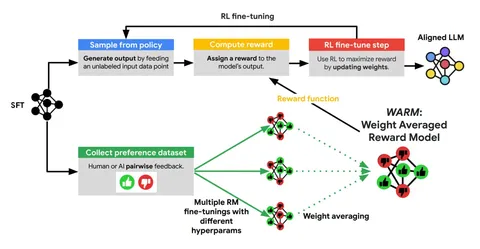

Сегодняшняя статья — о методе усреднения весов reward-модели для устранения проблем, связанных с RL-обучением. Но для начала напомним, как работает Reward-модель.
На вход она принимает промпты и ответы, а на выход выдаёт скаляры. По ним возможно ранжировать ответы от лучшего к худшему. Всё это делается с помощью обучения на минимизацию лосса, который вытекает из модели Брэдли-Терри. Как правило, reward-модели обучаются на датасете из преференсных данных — то есть таких, в которых ответы уже размечены асессорами или другой моделью.
Есть ряд проблем, с которыми можно столкнуться во время обучения reward-модели. Во-первых, разметка может оказаться достаточно шумной — например, при расхождениях в оценках одного и того же ответа разными асессорами. Кроме того, в некоторых случаях политика может генерировать OOD-ответы для выбранной reward-модели.
Наконец, возможно и такое, что reward-модель выучится на какой-то черте данных — например, особенностях оформления. При этом на файнтюнинге модель научится генерировать те ответы, которые будут давать высокий скор именно из-за этой особенности, а не из-за качества самих ответов. Скажем, будет отдавать приоритет хорошо оформленным, а не правильным ответам.
Существует несколько методов, призванных справится с вышеописанными проблемами. Например, можно обучить много абсолютно разных reward-моделей и усреднить их логиты. Этот метод называется prediction ensembling (ENS), а его главный недостаток заключается в необходимости инферить сразу несколько моделей, что не очень экономично в условиях файнтюнинга.
Авторы статьи, в свою очередь, предлагают обучать reward-модель с помощью одного датасета с преференсными данными, но с разными гиперпараметрами, а также с разных чекпоинтов SFT-обучения. В результате получается несколько моделей с одинаковой архитектурой. Их веса следует усреднить в одну модель — Weight Average Reward-Model (WARM), которая поступает как reward-функция в RL. Проведенный авторами анализ показал, что WARM — это аппроксимация ENS.
Почему это должно работать? Известно, что существует линейная связь в моделях, обученных из одного претрейна. Она позволяет усреднять веса, не теряя при этом в качестве. Однако это справедливо только для одного претрейна.
Проверки c использованием датасета TL;DR summarization показали, что WARM запоминает меньше испорченных или некорректных данных разметки в датасете, чем ENS. То же самое касается работы с OOD-примернами. Однако на «чистом» фрагменте датасета, где разметка без ошибок, ENS выдаёт лучшие результаты.
Авторы заявляют, что преимущество их метода заключается в использовании всего одной модели в ходе файнтюнинга — это позволяет экономить время и вычислительные ресурсы. Кроме того, WARM решает некоторые проблемы, связанные с «грязными» данными. Однако есть и ограничения. Например, необходимость обучаться из одного претрейна и невозможность использовать разные архитектуры.
Разбор подготовил
Душный NLP
